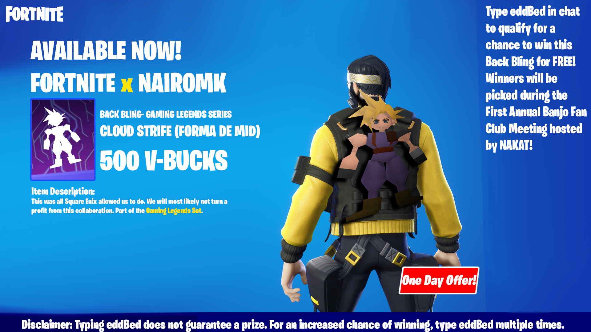
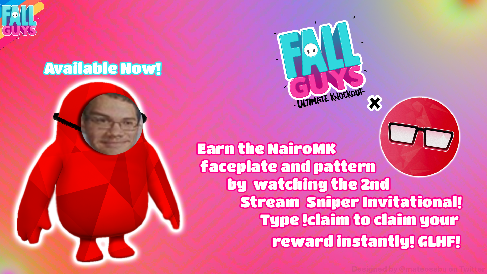
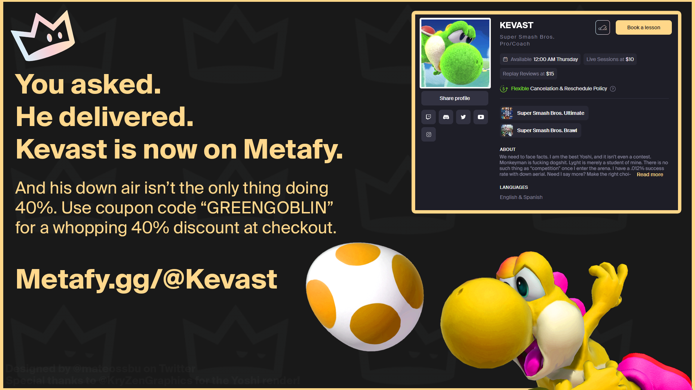

Raised in Phillipsburg and currently living in
High Bridge, and planning to graduate with an Associate's May 2023.
I decided to major in graphic design because of how much I loved
my digital media classes in high school (SHOUTOUT MR. COOMBE)
My Hobbies/Interests:
Videogames (Who would've guessed)- I play a lot of different
games but my biggest ones right now are League and Smash Ultimate.
I actually used to travel around the state here and there
and compete at tournaments and I met a lot of cool people
that way. But for now I'm just focusing on school and work
Fitness- Over the last year I decided I wanted to see what
the gym would do for me physically and mentally. I went from
204 pounds to 157 in a little over a year and one week, and am
still making progress with it. Very happy I decided to commit
Music- I almost always have music playing. I had no idea how
to represent that with an image so I used the funko pop my uncle
got me a while back to represent that LOL. My favorite artists right now
are probably Post Malone, Amine, Kanye, and Baby Keem
Design- I like making graphics for small organizations or friends.
Because of my connections with the smash ultimate community i've been
able to make some stuff for pretty big audiences, and it's helped me
a lot with stepping my foot in the door. My biggest collaborator so far is I'll try to post some of my work in the photo gallery.
Some Other Interests: Skyrim, animation, hip-hop, sushi, illustration, game design
The Gallery
The ol' ReliableI'm not sure how to caption this it's honestly a really stupid photo lolI don't collect funko pops but my uncle bought me this for my birthday a year or two ago and it's been chillin right next to my PC ever since lol



These were some graphics I made for a streamer that I'm cool with, NairoMK. We had the idea
of hosting a tournament where the players only consisted of stream snipers (stream snipers are players that purposely time their queues so that they match up with
the streamer they're watching). I made fake advertisements to show in between tournament sets, and the audience reaction was awesome, everyone loved them and they are
still an inside joke months later. The first of this series of images is the main promotional poster for the event, designed to look like
a crime investigation board. Warning for some offensive language on the 3rd advertisement!